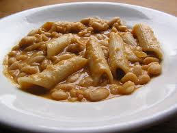

Pasta Fagioli

Description
Pasta Fagioli, translated as "bean pasta", is a hearty and comforting pasta that can be made with staple kithcen ingredients and cannellini beans
Prep time: 25-30 minutes.
Ingredients
- 1 can of cannellini beans
- 1 can of tomatoes
- 2-3 tbsp. extra virgin olive oil
- 1/2 a yellow onion, diced
- 2-3 stalks of celercy, diced
- Pinch of salt
- 1/3 cup freshly grated Parmigiano Reggiano
- 1/3 cup chopped fresh parsley
- 1 pound of any short noodle, but in this recipe we will use rigatoni
Steps
- In a sauce pan, add olive oil and set to medium heat
- Dice onion and celery into similar sized small chunks. Once diced, add to oil in sauce pan.
- Season veggies and oil with salt to taste
- After a few minutes of frying the veggies, add can of tomatoes to sauce pan
- Cook down the tomatoes for about 15 minutes, and then add the can of cannellini beans
- In a seperate medium large pot, set water to boil. Add a few pinches of salt to boiling water
- Once water is to a rolling boil, add dry rigatoni
- Once rigatoni is AL DENTE, drain boiling water. Save one cup of the pasta water before draining it all.
- Add al dente rigatoni to the sauce pan with the beans, and stir everything together to incorporate into a sauce, adding grated parigiano and pasta water to create a thicker consistency.
- Once the desired consistency is acheived, plate pasta with freshly grated parmigiano and fresch cut parsley on top
Home